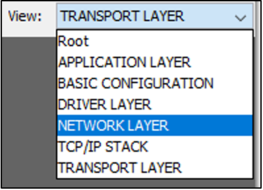
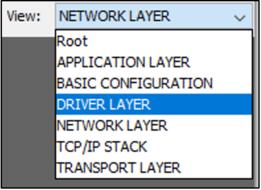
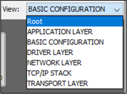
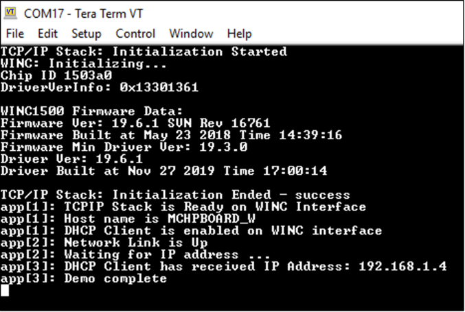

Create your first WIN3400 Bypass mode example using Harmony TCP/IP stack
Overview
This tutorial is a getting-started guide to demonstrate how to create a WINC3400 Bypass (Ethernet) mode example using MPLAB® Harmony v3 TCP/IP stack.
This tutorial implements a simple STA Client application on a microcontroller development board. This will guide you through the steps required to create a new TCP/IP application using MPLAB® Harmony 3 modules.
Software Details
This tutorial is tested with following tool versions.
- MPLAB® X IDE v5.40
- MPLAB® XC32/32++ C Compiler v2.40
- MPLAB® Harmony Configurator Plugin (MHC) v3.6.0
- MPLAB® Harmony v3 Software Framework
Note : Harmony 3 comes in modular format where user can choose which modules to work with. In order to create WINC1500 bypass mode example, following modules are essential.
Harmony Content Manager tool can be used to download/clone the repositories from Github.
- bsp v3.9.0
- core v3.9.2
- csp v3.9.1
- dev_packs v3.9.0
- mhc v3.8.0
- net v3.7.2
- wireless_wifi v3.5.1
- wireless_apps_winc3400 v3.4.1
Hardware Setup
The getting-started guide demonstrates the creation of a TCP/IP demo on the SAM E54 Xplained Pro board with the ATWINC1500 XPRO board. These steps can be applied for other supported development boards applying the device/board specific configuration changes. The microcontroller should be supported by NET and Wireless modules within H3. At this point, SAM E54 is the only device supported by both modules. New device support is constantly added to modules. Check the individual module release notes for more details about device support.
The SAME54 Xplained PRO contains a built-in programmer-debugger tool called Embedded Debugger (EDBG) which is used in this tutorial.
- Embedded Debugger (EDBG).
Following image shows the hardware setup.

Creating a new Harmony project
Follow the steps to create a basic Harmony project. The assumption is that H3 modules are cloned at “C:\microchip\harmony\v3"
-
Open the MPLAB® X IDE.
-
Create a New Project by selecting File > New Project.
-
In the New Project window select 32-Bit MPLAB® Harmony 3 Project and click Next.

Note: The MPLAB® Harmony 3 Project will not be displayed if the MPLAB® Harmony 3 Configurator plug-in is not installed. It has to be installed before continuing with the next steps.
-
In the Framework Path, enter the path of the folder to which the MPLAB® Harmony 3 packages are downloaded.

- In the Project Setting dialog window, fill in or select the information needed as follows:
- Location: First, create a “winc_bypass_getting_started” folder in the location of your choice (for example, create the application project inside the ‘C:\microchip\harmony\v3\wireless_apps_winc3400\apps' folder). Then enter the path in this field.
- Folder: Project Folder name. For example, sam_e54_xpro_winc3400.
- Name: Project Name i.e. winc_bypass_getting_started_sam_e54_xpro_winc3400.
-
Path: Selecting the above fields auto populates the Path.

- Click Next.
- In the Configuration Settings dialog window, fill in or select the information needed as follows:
- Name: Configuration Name. For example, sam_e54_xpro_winc3400.
- Target Device: Use the below table to chose the target device part number based on the demo board that you are using. For this example: SAM E54 Xplained Pro uses ATSAME54P20A.
-
The Device Filter textbox helps narrow down list of available devices as shown.

- Click Finish.
-
First time when you create a Harmony 3 project, “Window Manager Selection Dialog” appears. The user can select “Standalone” or “Native” depending upon the preference. “Standalone” opens the MHC in a separate window. “Native” opens MHC as a window within MPLAB® X IDE.

-
If the above dialog window doesn’t appear then MHC can be launched by selecting MPLAB® Harmony 3 Configurator under Tools -> Embedded -> MPLAB® Harmony 3 Configurator.

-
In the MPLAB® Harmony Launcher window, leave the launch path as default option i.e. MPLAB® Harmony Project Path but make sure it is correctly pointed to desired H3 cloned directory and click Launch.

-
In the Configuration Database Setup window, leave the DFP and CMSIS paths as default and click Launch

-
MHC window will open now. The default standalone Harmony configurator will be as shown below.
Different parts of configurator are:
- Available Components
- Active Components
- Project Graph
- Configuration Options
-
Console Window

-
Depending upon the application needs, the necessary components can be added from the Available Components. Go to Available Components -> Board Support Packages (BSPs) and double click on the Board support package for the target board. Below example shows the BSP for SAME54 Xplained Ultra board.

After adding BSP, the Project Graph will look as below:

Basic components needed for creating a project will be available in project graph by default. The next step would be to configure the components based on the application needs.
Add TCP/IP Components
The TCP/IP components can be added from the Available Components. Go to Available Components -> Libraries -> TCPIP
The TCP/IP components are categorized into 5 different groups and a configurator is available for each group.
These configurators are:
- TCP/IP Application Layer Configurator
- TCP/IP Transport Layer Configurator
- TCP/IP Network Layer Configurator
- TCP/IP Driver Layer Configurator
- TCP/IP Basic Configurator

Note: It is recommended to add the TCP/IP components using these configurators.
When the components are added using configurators, the dependent modules will be auto-activated.
Application Layer Configurator
-
Under Available Components, Select the TCP/IP Application Layer Configurator and double click. This step will add the TCP/IP Application Layer Configurator inside the APPLICATION LAYER group.

-
This step also creates a hierarchy of groups as Root->TCP/IP STACK->APPLICATION LAYER. Verify the hierarchy by going View: dropdown and check out different layers.

-
If you changed the view, come back to APPLICATION LAYER view by using View: dropdown.
-
Select the TCP/IP Application Layer Configurator. See the configurations options on right hand side.

The different application protocols supported in the Harmony TCP/IP stack are listed.
Start selecting the required TCP/IP application layer protocols from the Configuration Options on right hand side.
-
For the Getting Started demo, select the DHCP CLIENT. This step will auto-activate all the dependent components.
-
Click Yes to add the Harmony Core component.

-
Click No to for the FreeRTOS auto-activation as this demo does not need the FreeRTOS.

-
Click Yes to add the TIME (sys_time) component.

-
Click Yes to add the CONSOLE (sys_console) component.

-
Click Yes to connect the CONSOLE component with TCP/IP CORE.

-
Click Yes to add the DEBUG (sys_debug) component.

-
Click Yes to connect the CONSOLE component with TCP/IP CORE.

-
Click Yes to add the IPv4 component in TCP/IP Network Layer.

-
Click Yes to add the ARP component in TCP/IP Network Layer.

-
Click Yes to add the UDP component in TCP/IP Transport Layer.

After the auto-activation of dependent components, the DHCP CLIENT component is added to Project Graph

-
Add the DNS CLIENT to APPLICATION LAYER

Transport Layer Configurator
-
Click on View: dropdown and go to the TRANSPORT LAYER.

-
Select the TCP/IP Transport Layer Configurator.

UDP has been auto-activated while adding the Application Layer components.
-
Add the TCP protocol support for this demo.

-
Click Yes to add the TCP component in the TCP/IP Transport Layer

Network Layer Configurator
-
Click on View: dropdown and go to the NETWORK LAYER.

-
Select the TCP/IP Network Layer Configurator.

-
Add the ICMPv4 protocol support for this demo.

-
Click Yes to add the ICMPv4 component in the TCP/IP Network Layer

-
Select ICMPv4 component in project graph to show its configuration settings in Configuration Options window. Enable checkbox for Use ICMPv4 Client. We need this to be able to ping other devices.

Driver Layer Configurator
-
Click on View: dropdown and go to the DRIVER LAYER.

-
Select the TCP/IP Driver Layer Configurator and enable WINC module checkbox. Click Yes to add the WINC component in the TCP/IP Driver Layer

-
Click Yes to connect the WINC component with the NETCONFIG.

-
WINC component is added in the TCP/IP Driver Layer.

Basic Configuration
-
Click on View: dropdown and go to the Basic Configuration layer.

-
This layer contains TCP/IP stack’s core configuration,interface selection, heap management, MAC configuration, etc. Basic STACK Configuration and Network Configuration are already auto-activated, during previous steps.

-
Select the TCP/IP Basic Configurator and enable TCPIP CMD

-
Click Yes to connect the CMD component with the SYS Console.

-
Command module is added to the Basic Configuration layer.

Satisfying Module Dependencies
The project needs few more Harmony components. In this section, we will add and configure the required components.
-
Click on View: dropdown and go to the Root layer.

The Root layer will be as shown below. The red diamond-shaped buttons are unsatisfied mandatory dependencies. the connections might look messy at first. Feel free to move around some boxes so that project graph looks pretty.

- Note: There are two ways to satisfy dependencies. You can either right-click on red diamonds and select available satisfiers OR you can manually add components from Avilable Components window and manually connect diamonds. Both ways are shown here.
Satisfy Timer dependency:
-
Right click on red diamond for TIME module. From the list of Satisfiers, select TC3.

-
Timer peripheral instance TC3 will be added to Root layer and connected to the TIMER module.

Satisfy Console dependency:
-
From Available Components > Peripherals > SERCOM >, double-click on SERCOM2 to add it to current layer.

-
SERCOM2 is added to the Root layer.

-
To satisy Console UART dependency, manually connect UART diamond from SERCOM2 with the UART diamond of CONSOLE module.

-
Select SERCOM2 in the Project Graph. In the Configuration Options of SERCOM2,
- Set the TX Ring Buffer Size to 1024
- Set the Receive Pinout to PAD[1].

Satisfy TCP/IP Stack’s (i.e. WINC’s) SPI dependency:
-
Right click on DRV_SPI red diamond of TCP/IP STACK module and select SPI as satisfier.

-
Right click on red diamond of SPI driver module and select SERCOM4.

-
Select SERCOM4 in the Project Graph. In the Configuration Options of SERCOM4,
- Set the Data IN pad to PAD[3]
- Select Enable SPI Master Hardware Select checkbox.

Satisfy Transport Layer LIB_CRYPTO Dependency:
-
Click on View: dropdown and go to the Tranport layer.

-
Right click on LIB_CRYPTO of TCP and select Cryptographic Library from Available Satisfiers

-
Right click on LIB_WOLFCRYPT of Cryptographic Library and select wolfCrypt Library from the list of Satisfiers.

-
The project graph will become:

Satisfy WINC’s External Interrupt dependency:
-
From Available Components > Peripherals > EIC >, double-click on EIC to add it to current Root layer.

-
Select EIC in the Project Graph. In the Configuration Options of EIC,
- Select Enable EIC channel 7.
- Select Enable Interrupt
- Set the Edge selection to Falling edge detection.

All necessary dependencies are care of.
Project Heap Configuration
-
Select the System in the Project Graph. In Configuration Options, set the Heap Size (bytes) to 96960.

WINC Driver Configuration
-
Click on View: dropdown and go to the DRIVER LAYER.

-
Select WINC module in project graph. In the Configuration Options window, select the Interrupt Source for WINC as recently enabled EIC Channel 7.

Pin Configuration
The I/O pins on the device can have alternate functions other than the general purpose I/O function. Here, we will configure the functionality of the I/O pins required for this demo.
-
Open MHC -> Tools -> Pin Configuration.

-
Configure the pins for EXT_INT7, SERCOM2, SERCOM4 and 2 GPIO as shown below. Notice the GPIO pins must have Custom Name as shown in the figure.


Code Generation
Once Harmony components are added using MHC to the Project Graph, it’s time to generate the source files based on the configurations.
-
Click Save button and Generate the code by clicking the Generate Code button (marked in red).

-
Select the Merge Strategy as USER ALL. Refer to the MHC documentation for different merge strategy options.

-
Click the Generate button to start the code generation.

Application Coding
Now, you have the MPLAB® Harmony components configured for a TCP/IP application. The Getting-Started demo implements a simple Wi-Fi STA application. This application is written using the APIs provided by the MPLAB® Harmony TCP/IP Stack.
There is already a STA demo implemented at D:\MH3\wireless_apps_winc3400\apps\wifi_winc_sta_bypass. Let’s make use of those source files for the winc_bypass_getting_started demo.
-
Copy the application files (i.e. app.c, app.h) from D:\MH3\wireless_apps_winc3400\apps\wifi_winc_sta_bypass\firmware\src.
-
Paste the application files at our current project’s location. D:\MH3\wireless_apps_winc3400\apps\winc_bypass_getting_started\firmware\src.

-
In MPLAB® X IDE project, open the app.c file that has been added to project and change the access point parameters as shown in the picture below.

Build the Application
-
Open the project Properties by Right Clicking on the project name (winc_bypass_getting_started). Ensure that the XC32 Compiler Tool-chain and SAME54 EDBG hardware tool is selected. Press OK.

-
Build the application by clicking on the Build Main Project.

-
Verify the build results. Make sure that the build is successful.

Program the Application
Now, the project is ready to be programmed on the hardware board. Refer to the hardware user-guide to see the different programming options supported.
The SAME54 Xplained board can be programmed using the on-board debugger EDBG.
-
Connect a micro-USB cable from computer to the DEBUG USB port on the SAM E54 Xplained Ultra board.
-
Program the application by clicking on the Make and Program Device Main Project.

-
Make sure that the programming is successful.
Test the Application
The testing of the application is done using different console commands.
There will be a virtual COM port enumerated when a micro-USB cable from the computer is connected to the DEBUG USB port on SAM E54 Xplained Ultra board.
-
Open a terminal application (eg: TeraTerm) and configure the baud rate for 115200.

-
Press the Reset button on the SAM E54 Xplained Ultra board.
-
The following messages will be visible on the terminal window.

-
Type ping <PC’s IP address> in the terminal window and press Enter to see responses.

-
You can also ping this board from your PC using cmd prompt as shown below.

-
Currently, WINC driver is configured not to display any logs. You can change this setting in MHC by going to DRIVER LAYER and modifying the WINC configuration as shown below.

-
After re-generating and re-programming with logging turned on, you will see following output in tera term console.

You have successfully created and tested your first WINC3400 Bypass mode Application.